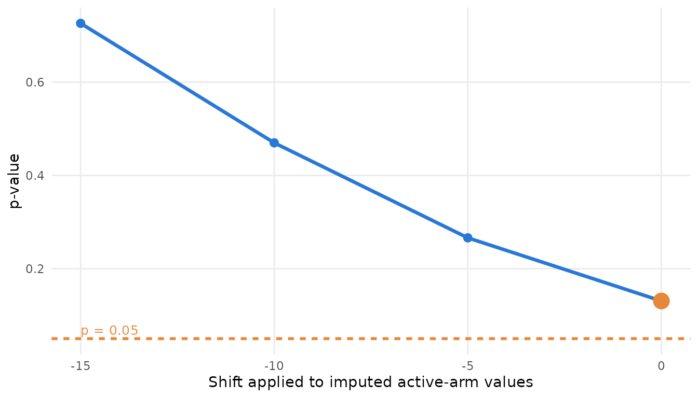

Missing data: reference-based and delta-adjusted imputation
Source:vignettes/missing-data.Rmd
missing-data.RmdAn MMRM assumes the missing responses are missing at random. The two standard ways to test that assumption are reference-based imputation, which replaces the assumption with a clinically stated one, and delta adjustment, which asks how much worse the imputed values would have to be before the conclusion changes.
library(ballast)
dat <- mmrm::fev_data[mmrm::fev_data$USUBJID %in% paste0("PT", 1:100), ]
spec <- stress_spec(dat, "FEV1", "USUBJID", "AVISIT", "ARMCD", "PBO", covariates = ~ FEV1_BL,
covariance = "us", method = "Satterthwaite", vcov = "Asymptotic")
stress_fit(spec)[, c("estimate", "stderr", "p", "n_subj")]
#> estimate stderr p n_subj
#> 1 4.704172 2.15044 0.03194726 99Reference-based imputation
stress_reference() fits a multivariate-normal imputation
model (treatment by visit, the subject-level covariates, unstructured
covariance) and draws the missing values under four assumptions: missing
at random, jump to reference, copy reference, and copy increments in
reference. Parameter uncertainty comes from bootstrap refits of the
imputation model, one per imputation. The vignette uses few imputations;
use 25 or more in practice.
ref <- stress_reference(spec, m = 5, seed = 1)
ref[, c("label", "estimate", "stderr", "p", "note")]
#> label estimate stderr p
#> 1 MAR 4.589312 2.132649 0.03504009
#> 2 J2R 3.642409 1.933720 0.06151019
#> 3 CR 3.742395 1.951151 0.05660463
#> 4 CIR 4.158507 2.121805 0.05546734
#> note
#> 1 reference PBO, shift 0 on TRT, common covariance, seed 1; m = 5 of 5 converged; MC SE of estimate 0.431
#> 2 reference PBO, shift 0 on TRT, common covariance, seed 1; m = 5 of 5 converged; MC SE of estimate 0.317
#> 3 reference PBO, shift 0 on TRT, common covariance, seed 1; m = 5 of 5 converged; MC SE of estimate 0.303
#> 4 reference PBO, shift 0 on TRT, common covariance, seed 1; m = 5 of 5 converged; MC SE of estimate 0.458The package’s implementation was checked against rbmi on the
antidepressant data that rbmi ships: with the same imputation model, the
same number of bootstrap draws and the same analysis model applied to
both engines’ completed data sets, all four assumptions agree within
Monte Carlo error. One caution for rbmi users:
rbmi::set_vars() adds only the main effects of group and
visit, so the treatment-by-visit interaction has to be named in its
covariates.
Delta adjustment
stress_tipping() imputes by fully conditional
specification (the regression method of SAS PROC MI), adds a shift to
the active arm’s imputed values, refits and pools.
delta = 0 is the missing-at-random multiple-imputation
analysis and is counted as an alternative; the other deltas are
searches. tipping_point() interpolates the crossing and
plot_pcurve() draws the curve.
tp <- stress_tipping(spec, deltas = c(0, -5, -10, -15), m = 5, seed = 1)
tp[, c("label", "estimate", "p", "kind")]
#> label estimate p kind
#> 1 delta 0 4.309511 0.1307718 alternative
#> 2 delta -5 3.129395 0.2661672 search
#> 3 delta -10 2.029560 0.4698498 search
#> 4 delta -15 1.000075 0.7260519 search
tipping_point(tp)
#> family n
#> delta-adjusted multiple imputation delta-adjusted multiple imputation 4
#> param_min param_max p_min p_max
#> delta-adjusted multiple imputation -15 0 0.1307718 0.7260519
#> crossing direction
#> delta-adjusted multiple imputation NA <NA>
plot_pcurve(tp, xlab = "Shift applied to imputed active-arm values")
Intercurrent events
When an intercurrent event is the reason for the missing data,
stress_estimand() derives the analysis data sets implied by
each handling strategy (treatment policy, hypothetical, while on
treatment, composite) and refits each. A hypothetical strategy sets the
post-event responses to missing; the reference-based family can then be
run on that derived data set with
spec_update(spec, data = ...).